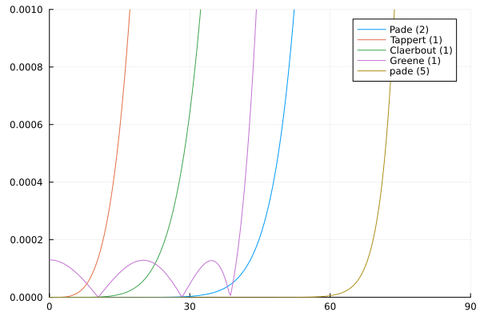

Marchers
To be renamed.
using OceanSonar
using Plots
θ_deg = range(0, 90, 301)
θ = deg2rad.(θ_deg)
q = -sin.(θ).^2
helmholtz(q) = √(1 + q)
helmholtz_q = helmholtz.(q)
plot()
for model = list_models(OceanSonar.RationalFunctionApproximation)
rfa = OceanSonar.RationalFunctionApproximation(model)
errs = helmholtz_q - rfa.(q) .|> abs
plot!(θ_deg, errs,
label = string(model, " (", length(rfa.a), ")")
)
end
model = :pade
rfa = OceanSonar.RationalFunctionApproximation(model, m = 5)
errs = helmholtz_q - rfa.(q) .|> abs
plot!(θ_deg, errs,
label = string(model, " (", length(rfa.a), ")")
)
plot!(
xlims = (0, 90),
ylims = (0, 0.001),
legend_position = :best
)
savefig("phase_errors.svg")"/home/runner/work/OceanSonar.jl/OceanSonar.jl/docs/build/acoustics/propagation/parabolic/phase_errors.svg"Replication of Figure 6.1b of Jensen, et al (2011).
